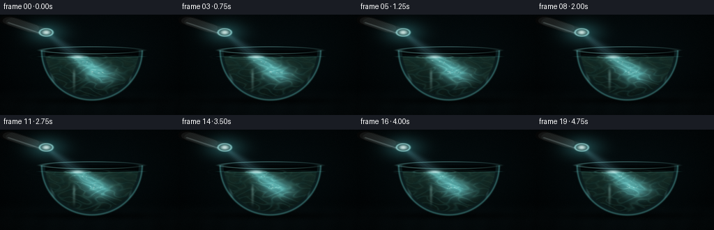
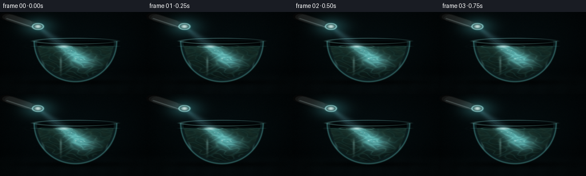

CODING AGENTS AS PIXEL WORLD MODELS
traex/DeepSeek-V4.1-Flash · phygen_047
点击播放 · 原生 RGB 像素
逐轮保存的候选
回放视频、检查图与代码变化。
每份候选均可单独播放。实际图片检查记录在下方工具轨迹中。
候选 01播放与检查图
点击播放 · 原生 RGB 像素


展开代码变化
--- 上一保存版本
+++ 本次保存版本
@@ -0,0 +1,388 @@
+"""Procedural RGB video: a flashlight beam passing through murky water."""
+
+from pathlib import Path
+
+import numpy as np
+from PIL import Image, ImageFilter
+
+import artifact_io
+
+
+OUT_W, OUT_H = 256, 144
+N_FRAMES = 20
+FPS = 4
+SS = 3
+W, H = OUT_W * SS, OUT_H * SS
+CASE_DIR = Path(__file__).resolve().parent
+
+
+def smoothstep(edge0, edge1, values):
+ t = np.clip((values - edge0) / (edge1 - edge0), 0.0, 1.0)
+ return t * t * (3.0 - 2.0 * t)
+
+
+def blur_channel(values, radius):
+ if radius <= 0:
+ return values
+ image = Image.fromarray(np.clip(values * 255.0, 0, 255).astype(np.uint8))
+ return np.asarray(image.filter(ImageFilter.GaussianBlur(radius)), dtype=np.float32) / 255.0
+
+
+def blur_rgb(values, radius):
+ return np.stack([blur_channel(values[..., channel], radius) for channel in range(3)], axis=-1)
+
+
+def over(base, color, alpha):
+ return base + (np.asarray(color, dtype=np.float32) - base) * alpha[..., None]
+
+
+def add_light(base, color, amount):
+ return base + np.asarray(color, dtype=np.float32) * amount[..., None]
+
+
+def capsule(x, y, ax, ay, bx, by, radius):
+ dx, dy = bx - ax, by - ay
+ length_sq = dx * dx + dy * dy
+ projection = np.clip(((x - ax) * dx + (y - ay) * dy) / length_sq, 0.0, 1.0)
+ distance = np.hypot(x - (ax + projection * dx), y - (ay + projection * dy))
+ return 1.0 - smoothstep(radius - 0.0025, radius + 0.0025, distance)
+
+
+def beam_field(x, y, origin, target, time):
+ ox, oy = origin
+ tx, ty = target
+ vx, vy = x - ox, y - oy
+ dx, dy = tx - ox, ty - oy
+ length = np.hypot(dx, dy)
+ dx, dy = dx / length, dy / length
+ along = vx * dx + vy * dy
+ perp = np.abs(-vx * dy + vy * dx)
+ reach = np.clip(along / 0.55, 0.0, 1.0)
+ sigma = 0.007 + 0.050 * reach
+ radial = np.exp(-0.5 * (perp / sigma) ** 2)
+ longitudinal = smoothstep(-0.005, 0.035, along) * (
+ 1.0 - smoothstep(0.46, 0.68, along)
+ )
+ streaks = 0.91 + 0.09 * np.sin(
+ np.arctan2(vy, vx) * 73.0 + along * 28.0 - time * 1.4
+ )
+ return radial * longitudinal * streaks
+
+
+def make_particles(water_alpha, rng):
+ candidates = np.argwhere(water_alpha > 0.95)
+ chosen = candidates[rng.choice(len(candidates), size=190, replace=False)]
+ py = (chosen[:, 0] + 0.5) / H
+ px = (chosen[:, 1] + 0.5) / W
+ return {
+ "x": px.astype(np.float32),
+ "y": py.astype(np.float32),
+ "phase": rng.uniform(0.0, 2.0 * np.pi, len(px)).astype(np.float32),
+ "phase2": rng.uniform(0.0, 2.0 * np.pi, len(px)).astype(np.float32),
+ "size": rng.lognormal(mean=np.log(0.0021), sigma=0.45, size=len(px)).astype(
+ np.float32
+ ),
+ "energy": rng.uniform(0.35, 1.0, len(px)).astype(np.float32),
+ "warm": rng.uniform(0.0, 1.0, len(px)).astype(np.float32),
+ }
+
+
+def render_frame(frame_index, particles, background, x, y, rng):
+ t = frame_index / FPS
+ X, Y = np.meshgrid(x, y)
+
+ # Dark studio background with a faint cool pool of light around the bowl.
+ vertical = np.clip(Y / 0.95, 0.0, 1.0)
+ image = background.copy()
+ ambient = np.exp(
+ -0.5
+ * (((X - 0.52) / 0.34) ** 2 + ((Y - 0.52) / 0.36) ** 2)
+ )
+ image = add_light(image, (0.015, 0.055, 0.070), 0.45 * ambient)
+
+ # Faint tabletop and a soft shadow under the glass.
+ table = smoothstep(0.71, 0.88, Y)
+ table_texture = 0.5 + 0.5 * np.sin(X * 47.0 + Y * 7.0)
+ image = add_light(image, (0.010, 0.020, 0.024), table * (0.8 + 0.2 * table_texture))
+ shadow = np.exp(
+ -0.5 * (((X - 0.52) / 0.29) ** 2 + ((Y - 0.858) / 0.026) ** 2)
+ )
+ image *= 1.0 - 0.64 * shadow[..., None]
+
+ cx, rim_y, rx, ry = 0.515, 0.355, 0.282, 0.495
+ bottom = rim_y + ry
+ waterline = 0.418
+ lower = smoothstep(rim_y - 0.002, rim_y + 0.004, Y)
+ body_radius = ((X - cx) / rx) ** 2 + ((Y - rim_y) / ry) ** 2
+ outer_alpha = (1.0 - smoothstep(0.982, 1.012, np.sqrt(body_radius))) * lower
+ inner_radius = np.sqrt(body_radius) / 0.935
+ inner_alpha = (1.0 - smoothstep(0.982, 1.012, inner_radius)) * lower
+ shell_alpha = np.clip(outer_alpha - inner_alpha, 0.0, 1.0)
+
+ # The interior air and water are slightly different media.
+ image = over(image, (0.004, 0.012, 0.016), inner_alpha * 0.88)
+ water_top = smoothstep(waterline - 0.003, waterline + 0.005, Y)
+ water_alpha = inner_alpha * water_top
+ depth = np.clip((Y - waterline) / (bottom - waterline), 0.0, 1.0)
+
+ # Murky water: olive-teal top, cooler depths, with slow sediment texture.
+ fine = (
+ np.sin(X * 71.0 + np.sin(Y * 31.0 + t * 0.55) * 1.8)
+ + 0.65 * np.sin(Y * 93.0 - X * 18.0 - t * 0.34)
+ + 0.45 * np.sin((X + Y) * 137.0 + t * 0.18)
+ )
+ sediment = np.clip(0.50 + 0.22 * fine, 0.0, 1.0)
+ sediment = blur_channel(sediment, 0.7)
+ water_color = (
+ np.array([0.052, 0.145, 0.140], dtype=np.float32) * (1.0 - depth[..., None])
+ + np.array([0.016, 0.058, 0.064], dtype=np.float32) * depth[..., None]
+ )
+ water_color += np.array([0.026, 0.020, 0.006], dtype=np.float32) * (
+ sediment[..., None] * (1.0 - 0.45 * depth[..., None])
+ )
+ image = over(image, water_color, water_alpha * 0.94)
+
+ # Flashlight geometry and its cone of illumination.
+ lens = (0.259, 0.177)
+ beam = beam_field(X, Y, lens, (0.535, 0.565), t)
+ cone_soft = blur_channel(beam, 8.0)
+ image = add_light(image, (0.070, 0.125, 0.145), 0.52 * cone_soft)
+ image = add_light(image, (0.13, 0.24, 0.27), 0.40 * beam * (1.0 - water_alpha))
+
+ # Volumetric scattering in the water, strongest where the beam enters.
+ reach = smoothstep(0.25, 0.72, X)
+ beam_water = beam * water_alpha * (0.35 + 0.65 * reach)
+ image = add_light(image, (0.24, 0.54, 0.56), 1.30 * beam_water)
+ image = add_light(
+ image, (0.18, 0.33, 0.27), 0.32 * beam_water * (1.0 - 0.65 * depth)
+ )
+
+ # Animated caustic filaments travel with the beam and pool near the bottom.
+ warp_x = X * 52.0 + 1.4 * np.sin(Y * 36.0 - t * 1.15)
+ warp_y = Y * 71.0 + 1.1 * np.cos(X * 39.0 + t * 0.92)
+ caustic_field = np.sin(warp_x) * np.cos(warp_y * 0.63) + 0.45 * np.sin(
+ warp_x * 0.47 - warp_y * 0.83 + t * 0.8
+ )
+ caustic = np.exp(-0.5 * (caustic_field / 0.22) ** 2)
+ caustic *= water_alpha * (0.20 + 0.95 * beam) * (0.35 + 0.85 * depth)
+ image = add_light(image, (0.25, 0.63, 0.61), 0.46 * caustic)
+ image = add_light(image, (0.28, 0.25, 0.10), 0.16 * caustic * (1.0 - depth))
+
+ # Elliptical water surface, ripples, and a bright beam impact.
+ surface_rx = rx * np.sqrt(max(0.0, 1.0 - ((waterline - rim_y) / ry) ** 2))
+ surface_ellipse = ((X - cx) / surface_rx) ** 2 + (
+ (Y - waterline) / 0.012
+ ) ** 2
+ surface_band = np.exp(-0.5 * ((np.sqrt(surface_ellipse) - 1.0) / 0.16) ** 2)
+ surface_band *= 1.0 - smoothstep(1.08, 1.30, surface_ellipse)
+ image = add_light(image, (0.10, 0.27, 0.27), 0.35 * surface_band)
+
+ impact_x, impact_y = 0.435, 0.420
+ ripple_radius = np.hypot((X - impact_x) / 1.0, (Y - impact_y) / 0.19)
+ ring_phase = (ripple_radius * 58.0 - t * 7.2) % (2.0 * np.pi)
+ ripple = np.exp(-0.5 * ((ring_phase - np.pi) / 0.34) ** 2)
+ ripple *= np.exp(
+ -0.5 * (((X - impact_x) / 0.105) ** 2 + ((Y - impact_y) / 0.023) ** 2)
+ )
+ image = add_light(image, (0.32, 0.61, 0.59), 0.35 * ripple)
+ impact = np.exp(
+ -0.5 * (((X - impact_x) / 0.024) ** 2 + ((Y - impact_y) / 0.010) ** 2)
+ )
+ image = add_light(image, (0.75, 0.94, 0.92), 0.75 * impact)
+
+ # Suspended particles, lit by the beam and drifting with a gentle current.
+ for index in range(len(particles["x"])):
+ phase = float(particles["phase"][index])
+ phase2 = float(particles["phase2"][index])
+ px = float(
+ particles["x"][index]
+ + 0.0040 * np.sin(t * 0.80 + phase)
+ + 0.0012 * np.sin(t * 1.45 + phase2)
+ )
+ py = float(
+ particles["y"][index]
+ + 0.0030 * np.cos(t * 0.67 + phase2)
+ + 0.0010 * np.sin(t * 1.10 + phase)
+ )
+ sigma = float(particles["size"][index])
+ radius = max(2, int(np.ceil(sigma * W * 3.0)))
+ ix, iy = int(px * W), int(py * H)
+ x0, x1 = max(0, ix - radius), min(W, ix + radius + 1)
+ y0, y1 = max(0, iy - radius), min(H, iy + radius + 1)
+ if x0 >= x1 or y0 >= y1:
+ continue
+ dx = (X[y0:y1, x0:x1] - px) / sigma
+ dy = (Y[y0:y1, x0:x1] - py) / (sigma * 1.05)
+ local_beam = beam_field(
+ np.array([px]), np.array([py]), lens, (0.535, 0.565), t
+ )[0]
+ energy = float(particles["energy"][index])
+ glow = (0.14 + 1.75 * local_beam) * energy
+ gaussian = np.exp(-0.5 * (dx * dx + dy * dy))
+ core = np.exp(-0.5 * (dx * dx + dy * dy) * 5.5)
+ warm = float(particles["warm"][index])
+ color = np.array(
+ [0.28 + 0.46 * local_beam, 0.35 + 0.48 * local_beam, 0.18 + 0.64 * local_beam]
+ )
+ color = color * (1.0 - 0.35 * warm) + np.array([0.72, 0.53, 0.20]) * 0.35 * warm
+ image[y0:y1, x0:x1] += color * (0.12 * glow * gaussian + 0.42 * glow * core)[..., None]
+
+ # Slightly larger out-of-focus motes give the water depth.
+ for index in range(0, len(particles["x"]), 17):
+ phase = float(particles["phase"][index])
+ px = float(particles["x"][index] + 0.007 * np.sin(t * 0.42 + phase))
+ py = float(particles["y"][index] + 0.004 * np.cos(t * 0.51 + phase))
+ sigma = float(particles["size"][index]) * 2.7
+ radius = max(3, int(np.ceil(sigma * W * 3.0)))
+ ix, iy = int(px * W), int(py * H)
+ x0, x1 = max(0, ix - radius), min(W, ix + radius + 1)
+ y0, y1 = max(0, iy - radius), min(H, iy + radius + 1)
+ if x0 >= x1 or y0 >= y1:
+ continue
+ dx = (X[y0:y1, x0:x1] - px) / sigma
+ dy = (Y[y0:y1, x0:x1] - py) / sigma
+ radial = np.hypot(dx, dy)
+ local_beam = beam_field(
+ np.array([px]), np.array([py]), lens, (0.535, 0.565), t
+ )[0]
+ bokeh = np.exp(-0.5 * (radial / 0.76) ** 2) * (
+ 0.55 + 0.45 * np.cos(radial * 8.0)
+ )
+ image[y0:y1, x0:x1] += (
+ np.array([0.12, 0.29, 0.30])
+ * bokeh[..., None]
+ * (0.20 + 0.80 * local_beam)
+ )
+
+ # Thick glass wall: cool edge, side reflections, and a bright elliptical rim.
+ glass_tint = np.array([0.11, 0.30, 0.32], dtype=np.float32)
+ image = over(image, glass_tint, shell_alpha * 0.23)
+ edge = np.exp(-0.5 * ((np.sqrt(body_radius) - 1.0) / 0.012) ** 2) * lower
+ image = add_light(image, (0.24, 0.57, 0.58), 0.52 * edge)
+ side_left = np.exp(-0.5 * (((X - cx) / rx + 0.78) / 0.030) ** 2)
+ side_right = np.exp(-0.5 * (((X - cx) / rx - 0.76) / 0.022) ** 2)
+ side_reflection = (side_left * 0.8 + side_right * 0.55) * shell_alpha
+ image = add_light(image, (0.30, 0.56, 0.55), 0.34 * side_reflection)
+
+ rim_ellipse = ((X - cx) / rx) ** 2 + ((Y - rim_y) / 0.035) ** 2
+ rim_ring = np.exp(-0.5 * ((np.sqrt(rim_ellipse) - 1.0) / 0.055) ** 2)
+ rim_ring *= 1.0 - smoothstep(1.10, 1.28, rim_ellipse)
+ rim_light = 0.58 + 0.42 * np.cos((X - cx) / rx * 2.6 + 0.4)
+ image = add_light(image, (0.43, 0.79, 0.79), rim_ring * rim_light * 0.76)
+
+ # A narrow reflected glint on the front of the glass.
+ glint = np.exp(
+ -0.5 * (((X - 0.415) / 0.0055) ** 2 + ((Y - 0.585) / 0.105) ** 2)
+ )
+ glint *= smoothstep(0.52, 0.60, Y) * (1.0 - smoothstep(0.72, 0.80, Y))
+ image = add_light(image, (0.55, 0.80, 0.78), 0.31 * glint)
+
+ # Flashlight body, metal rim, and lens glow.
+ body = capsule(X, Y, 0.045, 0.056, 0.246, 0.171, 0.047)
+ body_core = capsule(X, Y, 0.052, 0.061, 0.236, 0.166, 0.037)
+ image = over(image, (0.024, 0.028, 0.031), body * 0.98)
+ image = over(image, (0.095, 0.105, 0.110), body_core * 0.76)
+ body_dx, body_dy = 0.246 - 0.045, 0.171 - 0.056
+ body_length = np.hypot(body_dx, body_dy)
+ nx, ny = -body_dy / body_length, body_dx / body_length
+ metal_stripe = capsule(
+ X,
+ Y,
+ 0.060 + nx * 0.024,
+ 0.060 + ny * 0.024,
+ 0.229 + nx * 0.024,
+ 0.160 + ny * 0.024,
+ 0.006,
+ )
+ image = add_light(image, (0.31, 0.37, 0.38), 0.48 * metal_stripe)
+ grip = capsule(X, Y, 0.075, 0.073, 0.176, 0.134, 0.043) * (
+ 0.45 + 0.55 * (0.5 + 0.5 * np.sin((X + Y) * 390.0))
+ )
+ image = add_light(image, (0.11, 0.14, 0.145), 0.42 * grip)
+
+ lens_radius = np.hypot((X - lens[0]) / 0.037, (Y - lens[1]) / 0.037)
+ lens_body = 1.0 - smoothstep(0.91, 1.02, lens_radius)
+ lens_ring = np.exp(-0.5 * ((lens_radius - 1.0) / 0.10) ** 2)
+ image = over(image, (0.055, 0.070, 0.073), lens_body)
+ image = add_light(image, (0.50, 0.84, 0.83), 0.85 * lens_ring)
+ lens_hot = np.exp(-0.5 * (lens_radius / 0.37) ** 2)
+ image = add_light(image, (0.84, 1.00, 0.96), 1.15 * lens_hot)
+ lens_halo = np.exp(
+ -0.5 * (((X - lens[0]) / 0.075) ** 2 + ((Y - lens[1]) / 0.075) ** 2)
+ )
+ image = add_light(image, (0.10, 0.27, 0.29), 0.75 * lens_halo)
+
+ # Fine dust in the room makes the cone feel volumetric.
+ for index in range(24):
+ phase = float(particles["phase"][(index * 7) % len(particles["phase"])])
+ px = ((index * 0.61803398875 + 0.08 + 0.006 * np.sin(t * 0.7 + phase)) % 1.0)
+ py = ((index * 0.38196601125 + 0.09 + 0.004 * np.cos(t * 0.5 + phase)) % 1.0)
+ local = beam_field(np.array([px]), np.array([py]), lens, (0.535, 0.565), t)[0]
+ if local < 0.015:
+ continue
+ dot = np.exp(
+ -0.5
+ * (
+ ((X - px) / 0.0015) ** 2
+ + ((Y - py) / 0.0022) ** 2
+ )
+ )
+ image = add_light(image, (0.42, 0.58, 0.57), 0.42 * local * dot)
+
+ # Gentle vignette, bloom, tone shaping, and restrained sensor grain.
+ vignette = 1.0 - 0.34 * (
+ ((X - 0.5) / 0.67) ** 2 + ((Y - 0.48) / 0.74) ** 2
+ ) ** 1.35
+ image *= np.clip(vignette, 0.50, 1.0)[..., None]
+
+ bright = np.clip(image - 0.43, 0.0, 1.5)
+ bloom_wide = blur_rgb(bright, 9.0)
+ bloom_tight = blur_rgb(bright, 2.4)
+ image += 0.34 * bloom_wide + 0.20 * bloom_tight
+ image = 1.0 - np.exp(-1.22 * np.maximum(image, 0.0))
+ image = np.clip(image, 0.0, 1.0)
+ image = np.power(image, np.array([0.96, 0.98, 1.01], dtype=np.float32))
+ grain = rng.normal(0.0, 0.0048, (H, W, 1)).astype(np.float32)
+ image = np.clip(image + grain, 0.0, 1.0)
+ return image
+
+
+def main():
+ rng = np.random.default_rng(47_047)
+ x = (np.arange(W, dtype=np.float32) + 0.5) / W
+ y = (np.arange(H, dtype=np.float32) + 0.5) / H
+ X, Y = np.meshgrid(x, y)
+
+ top = np.array([0.006, 0.018, 0.024], dtype=np.float32)
+ bottom = np.array([0.0015, 0.0045, 0.0070], dtype=np.float32)
+ mix = np.clip(Y / 0.95, 0.0, 1.0)[..., None]
+ background = top * (1.0 - mix) + bottom * mix
+
+ cx, rim_y, rx, ry = 0.515, 0.355, 0.282, 0.495
+ body_radius = ((X - cx) / rx) ** 2 + ((Y - rim_y) / ry) ** 2
+ lower = smoothstep(rim_y - 0.002, rim_y + 0.004, Y)
+ outer = (1.0 - smoothstep(0.982, 1.012, np.sqrt(body_radius))) * lower
+ inner = (
+ 1.0 - smoothstep(0.982, 1.012, np.sqrt(body_radius) / 0.935)
+ ) * lower
+ water_alpha = inner * smoothstep(0.415, 0.423, Y)
+ particles = make_particles(water_alpha, rng)
+
+ frames_hi = []
+ for frame_index in range(N_FRAMES):
+ frame = render_frame(frame_index, particles, background, x, y, rng)
+ frames_hi.append(frame)
+ print(f"rendered {frame_index + 1:02d}/{N_FRAMES}", flush=True)
+
+ frames = []
+ for frame in frames_hi:
+ image = Image.fromarray(np.clip(frame * 255.0, 0, 255).astype(np.uint8))
+ image = image.resize((OUT_W, OUT_H), Image.Resampling.LANCZOS)
+ frames.append(np.asarray(image, dtype=np.uint8))
+
+ artifact_io.save(np.stack(frames), CASE_DIR)
+ print(f"saved {len(frames)} frames and player to {CASE_DIR}", flush=True)
+
+
+if __name__ == "__main__":
+ main()
可观测工具轨迹
实际执行的命令与返回图片。
命令 1exit 0
/bin/bash -c "pwd && rg --files -g 'prompt.txt' -g 'GENERATION_RULES.md' -g 'task_spec.json' -g '"'!*.mp4'"' -g '"'!*.mov'"'"
命令 2exit 0
/bin/bash -c 'ls -la'
命令 3exit 0
/bin/bash -c 'cat prompt.txt'
命令 4exit 0
/bin/bash -c 'cat GENERATION_RULES.md'
命令 5exit 0
/bin/bash -c 'cat task_spec.json'
命令 6exit 0
/bin/bash -c "sed -n '1,240p' artifact_io.py"
命令 7exit 0
/bin/bash -c 'python generate.py'
命令 8exit 0
/bin/bash -c 'ls -lh inspection.png transition_check.png pixels.npz index.html frames/00.png'
命令 9exit 0
/bin/bash -c "python - <<'PY'
from PIL import Image
import numpy as np
im=Image.open('inspection.png')
print('inspection', im.size)
a=np.asarray(im)
print('mean RGB', a[...,:3].mean(axis=(0,1)))
for i in [0,10,19]:
f=np.asarray(Image.open(f'frames/{i:02d}.png'))
print(i, f.shape, f.min(), f.max(), f.mean(axis=(0,1)).round(1))
PY"命令 10exit 0
/bin/bash -c "python - <<'PY'
from PIL import Image
import numpy as np
for fi in [0,10]:
a=np.asarray(Image.open(f'frames/{fi:02d}.png')).astype(float)
lum=a.mean(2)
# tone boost for terminal inspection
lum=np.clip((lum/95)**0.55,0,1)
im=Image.fromarray((lum*255).astype('uint8')).resize((96,54),Image.Resampling.BILINEAR)
z=np.asarray(im)/255
chars=' .,:;irsXA253hMHGS#9B&@'
print('\\nFRAME',fi)
for row in z:
print(''.join(chars[min(len(chars)-1,int(v*(len(chars)-1)))] for v in row))
PY"命令 11exit 0
/bin/bash -c 'command -v chafa || true; command -v viu || true; command -v jp2 || true; command -v img2txt || true'
命令 12exit 0
/bin/bash -c "python - <<'PY'
from PIL import Image
import numpy as np
for fi in [0,10,19]:
a=np.asarray(Image.open(f'frames/{fi:02d}.png')).astype(float)
lum=a.mean(2)
print(fi, 'pct', np.percentile(lum,[0,1,5,25,50,75,95,99,100]).round(1), 'clip>245', (lum>245).mean().round(4), 'clip>200',(lum>200).mean().round(4))
PY"命令 13exit 0
/bin/bash -c "python - <<'PY'
from PIL import Image
import numpy as np
fs=[np.asarray(Image.open(f'frames/{i:02d}.png')).astype(np.float32) for i in range(20)]
for a,b in [(0,1),(0,5),(0,10),(0,19)]:
d=np.abs(fs[b]-fs[a])
print(f'{a}->{b}: MAE {d.mean():.3f}, changed px {(d.max(2)>2).mean():.3%}, max {d.max():.0f}')
print('unique pixel values per rgb channel', [len(np.unique(fs[0][...,i])) for i in range(3)])
PY"命令 14exit 0
/bin/bash -c 'python -m py_compile generate.py'
命令 15exit 0
/bin/bash -c 'command -v ffmpeg || true'
命令 16exit 0
/bin/bash -c "python - <<'PY'
from pathlib import Path
from PIL import Image
import numpy as np
files=sorted(Path('frames').glob('*.png'))
assert len(files)==20, len(files)
arr=[]
for f in files:
im=Image.open(f).convert('RGB')
assert im.size==(256,144), (f, im.size)
arr.append(np.asarray(im))
arr=np.stack(arr)
assert arr.dtype==np.uint8 and arr.shape==(20,144,256,3)
assert np.isfinite(arr).all()
print('frames:', arr.shape, 'dtype:', arr.dtype)
print('frame range:', int(arr.min()), int(arr.max()), 'mean:', arr.mean(axis=(0,1,2)).round(2))
print('payload:', Path('pixels.npz').stat().st_size, 'bytes; player:', Path('index.html').stat().st_size, 'bytes')
PY"保存候选 1 份；完成命令 16 次；可验证图片返回 0 张。原始 API 响应与完整日志保留在本地。